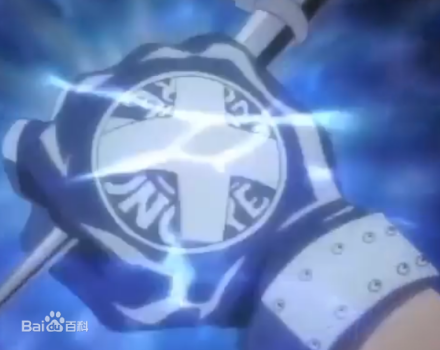

角色能力
战斗模式
-
死气模式
纲吉的头部被死气弹射击，“复活”之后头部会出现死气之炎，身上只会穿内衣裤，然后拼死去完成后悔的事。

-
超死气模式
纲吉被批评弹射击之后，会听到当时别人对自己的抱怨，将深藏于内心的觉悟释放，开启超死气模式，头部出现死气之炎，手上戴着可以点燃死气之炎的x手套。与死气模式不同的是，超死气模式是通过自我反省激发出潜在的力量，死气模式是基于外部的压力爆发出力量

{kind=link}
角色招式
-
零地点突破 改
阿纲以超直觉自创招式，借由进入与死气状态相反之状态，将纯火焰的攻击加以吸收抵销，可以说是一种将自己的火焰散去后，以外来火焰补足的招式。吸收攻击的纯火焰后转成自己的力量。
-
零地点突破 改 空手夺白刃
阿纲和幻骑士战斗时所创，徒手档下幻剑将火焰吸收后转成自己的力量。用日本的空手入白刃招式空手挡住劈来的刀，并在碰到刀的瞬间运用零地点突破．改将刀上的死气炎吸收为己用
-
零地点突破 初代版本 绝对零度
使手上的火焰变为负的超压缩能量（也就是寒气），用来封住死气之火或将水冻结为冰制造立足点。这种冰唯有高能的死气之火才足以将其融化。
-
X BURNER
使用“X手套 Ver.V.R”的专用招式。 以右手的柔性之炎支持左手的刚性之炎发射攻击，威力足以一举毁灭梅洛尼基地三个方块区域。
{kind=link}
{kind=link}
{kind=link}
角色武器
-
练习鞭
迪诺送给阿纲的武器。在阿纲与六道骸对战时用到，但阿纲除了打到自己外并未发挥太大作用。
-
死气丸
服用一颗时会进入死气状态（根据巴吉尔的说法，并不会像死气弹那般强力）若同时服用两颗时会进入超死气状态，不过除非经过训练，否则一般人服用两颗的话是没有效果的。
-
X手套
与六道骸对战之时，列恩体内所生成之武器。平时就像是普通的毛线手套，上面绣有“27”图样。当阿纲进入死气模式时，就会变身为X手套（被死气弹打中同样会变成X手套）。 可发出“柔之炎”用以攻击跟高速移动。
 -
X手套 Ver.V.R
“X手套 Version Vongola Ring”（彭格列之戒模式）。阿纲在经历过历代首领都做过的彭格列试炼后所得到的全新力量，由X手套进化而成。拥有彭格列大空之戒的图样，除了原有的“柔之炎”外，还可发出纯度更高的“刚之炎”，极具爆发性。 具有转换初代版本跟十代版本的死气的零地点突破的功能。
{kind=link}
{kind=link}
{kind=link}
{kind=link}
{kind=link}